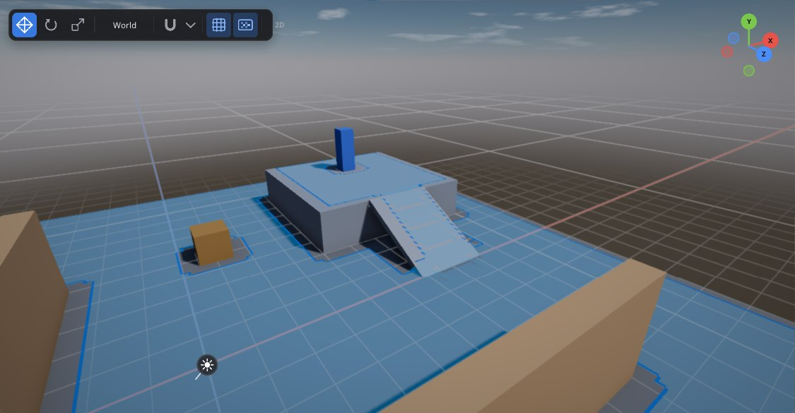
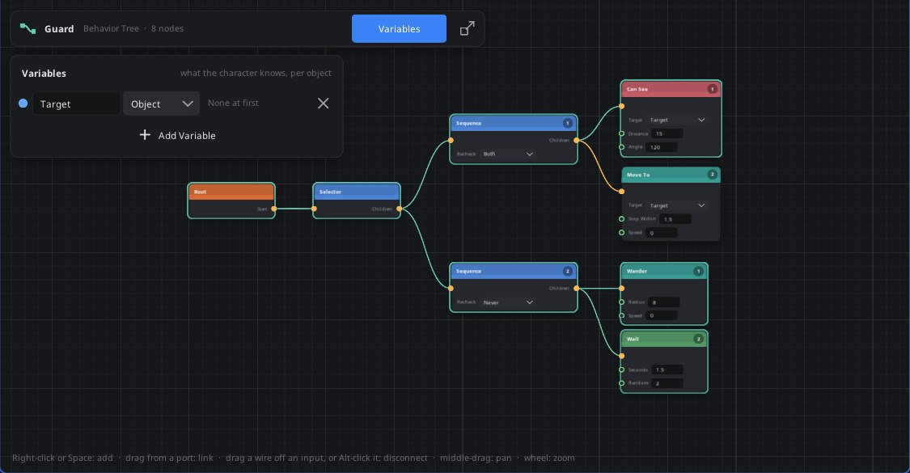

Navigation and AI
Characters that find their way round and decide what to do. A navmesh says where they can walk, a Nav Mesh Agent walks them there the shortest way, and a behaviour tree decides where: chase the player when they're seen, look round when they're heard, otherwise patrol.
Examples
Two behaviour trees, as they look in the editor. Drag to pan, scroll to zoom, and hover a node to see what it does.
The navmesh
The navmesh is the ground characters can walk on: floors, stairs and ramps that are flat enough, with room above for a character, kept a character's width away from walls and drops. It's made from what never moves:
- the colliders of objects without a Rigidbody (scenery), and
- the meshes of Mesh Renderers with Static ticked.
Characters, and things physics moves, aren't part of it, and nor is anything under them (a character's body).
- Open View › Navigation. It says how many objects the navmesh is made from.
- Set the size of your characters under Agents (see below).
- Save the scene, then press Bake. It bakes in the background, saves the navmesh in a
.navmeshfile beside the scene, and saves the scene.

| Setting | |
|---|---|
| Agent Radius | How far from their middle the characters reach. The navmesh keeps this far from walls and edges. |
| Agent Height | How tall they are: they don't go under anything lower. |
| Step Height | The highest step they walk up or down: kerbs and stairs. |
| Max Slope | The steepest slope they walk on, in degrees. |
| Cell Size | The size of the squares the navmesh is made of. Smaller follows the ground more closely and fits through narrower gaps, and takes longer to bake. |
| Min Area | Patches smaller than this many square units are left out: the tops of crates and tables. |
Move a wall or change a setting and bake again; Clear takes the navmesh away. A scene that hasn't been baked gets a navmesh made when the game starts, so agents work straight away. That takes a moment in a big scene (a city block took about a second), so bake it before you ship. A level built as the game runs can make its own: scene.Navigation.NavMesh = NavMesh.Build(scene);
Agents
A Nav Mesh Agent (Add Component › AI › Nav Mesh Agent) walks its object round the navmesh. Send it somewhere and it finds the way, round walls and up stairs. It speeds up, turns to face where it's going, slows to stop where it was sent, and steps round other agents rather than through them.
| Setting | |
|---|---|
| Speed | The fastest it walks, in units a second. |
| Acceleration | How quickly it gets up to speed and slows down. |
| Turn Speed | How fast it turns to face where it's going, in degrees a second. 0 leaves its turning to you. |
| Stopping Distance | How near where it's going it stops. |
| Radius | How far it keeps from other agents. |
| Avoid Others | Steps round other agents. Two meeting head on each keep to their right. |
On its own, an agent moves its object along the navmesh's ground. With a Character Controller on the same object, it moves that instead, with gravity, so the character is blocked and pushed like any other.
var agent = GetComponent<NavMeshAgent>()!;
agent.SetDestination(player.Transform.WorldPosition);
if (agent.Arrived) Log.Info("Got there");
agent.Stop();
// Ways across the navmesh, without an agent.
NavMesh navMesh = NavMesh.For(Scene.Active);
var path = new NavMeshPath();
if (navMesh.FindPath(from, to, path)) Log.Info($"{path.Corners.Count} corners, {path.Length:0.0} long");
navMesh.RandomPoint(Transform.WorldPosition, 10f, out Vector3 somewhere);
If where it's sent can't be reached (the top of a wall), it goes as near as it can. Its PathStatus says Partial.
Behaviour trees
A behaviour tree (a .btree file) is how a character decides what to do. Add a Behavior Tree component to the character, beside its Nav Mesh Agent, and press New Behavior Tree under it. The new tree is a guard: it chases its Target while it can see it, and otherwise wanders about, stopping now and then. Choose its Target (the player) under the component.

Each frame the tree runs from the Root, along the wires to the right. Each task it reaches says how it's doing:
- running (still walking somewhere, still waiting), and it carries on from there next frame;
- succeeded; or
- failed (it can't see the player).
The tasks under a node run from the top down, in the order they're placed: drag one higher to make it go first. The small numbers on their headers show the order. A task has one parent, so linking it somewhere else moves it. When the Root's task finishes, the tree starts again from the top (unless the component's Loop is off).
| Node | Does |
|---|---|
| Selector | Tries what's under it in order until one doesn't fail. Put what matters most at the top: chase, otherwise patrol. |
| Sequence | Does what's under it in order, and fails as soon as one fails. Put conditions first: Can See, then Move To. |
| Parallel | Runs everything under it at once, until all have succeeded (or any has, as you choose). |
| Random | Does one of what's under it, picked at random. |
| Invert, Always Succeed | Swap or ignore what the task under them says. |
| Repeat, Retry | Run the task under them again when it succeeds, or when it fails. |
| Cooldown, Time Limit | Don't run it again too soon; give up on it if it takes too long. |
| If | Runs the task under it while a condition (linked from Compare, Get Variable...) is true. |
| Can See, Is Near, Is Variable Set, Check, Chance | Conditions: they succeed or fail straight away. |
| Move To, Wander, Patrol, Flee, Look At, Stop | Movement, with the character's Nav Mesh Agent. Move To follows an object as it moves; Patrol goes to the next child of a waypoints object each time. |
| Wait, Set Variable, Play Animation, Play Sound, Send Event, Call Method, Log | Actions. Send Event starts visual scripts' On Event nodes; Call Method runs a method of the character's own C# components. |
The node reference has every input of every one. A task that goes wrong (a Move To on a character with no Nav Mesh Agent) is outlined red with what's wrong, said in the Console, and the tree stops.
Reacting as things change
A condition is checked when it's reached, so a guard walking somewhere wouldn't notice the player until it got there. A Sequence's Recheck says when its conditions (the ones before what's running) are checked again:
| Recheck | |
|---|---|
| Never | Only when they're reached. |
| While Running | Every frame while it runs: when one stops being true, it stops what it's doing and fails. The guard stops chasing when it loses sight of the player. |
| To Interrupt | Every frame while something after it, under the same Selector, runs: when they're all true, that's stopped and this runs instead. The guard stops patrolling as soon as it sees the player. |
| Both | Both: the usual choice for a chase. |
An If has the same setting, for its condition.
Variables
A tree's Variables (the button in its toolbar) are what the character knows: the player it's after, the route it patrols, where it last heard something. Each character running the tree has its own.
- In the inspector: under the Behavior Tree component. Set one there and it's this character's own.
- In the tree: Set Variable, and Get Variable for values (Position Of and Distance To read objects and places).
- From C#:
tree.SetVariable("Target", player)andtree.GetVariable("Target"). - From a visual script: the Set Tree Variable node.
Trees save themselves as you edit them. While the game plays, open a tree's tab to watch it: what's running lights up. Changes take effect straight away.
Your own tasks in C#
Call Method runs a method of one of the character's components that takes nothing. One that returns nothing (or true) succeeds, false fails, and BehaviorStatus.Running keeps it going: it's called again next frame.
public class Turret : Component
{
private float _heat;
// In the tree: Call Method, with Method set to "Fire".
public BehaviorStatus Fire()
{
if (_heat > 1f) return BehaviorStatus.Failure;
_heat += 0.25f;
return BehaviorStatus.Success;
}
}
From visual scripts
| Node | Does |
|---|---|
| Set Destination | Sends an object's Nav Mesh Agent somewhere. |
| Stop Moving | Stops it where it is. |
| Has Arrived | Whether it's got to where it was sent. |
| Set Tree Variable | Sets one of the variables of an object's behaviour tree. |
Not yet: links for jumping across gaps or climbing ladders; obstacles that move cutting holes in the navmesh as the game runs; and one navmesh for characters of different sizes.